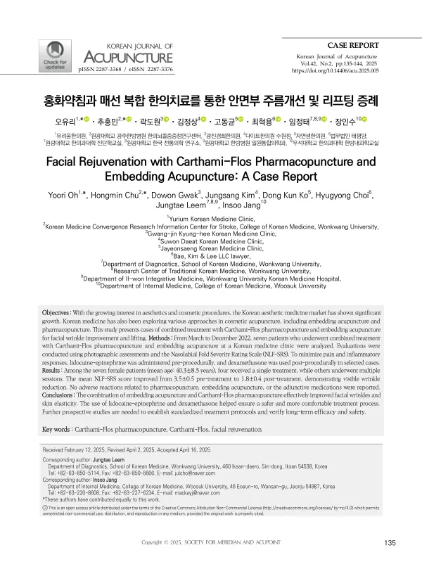

Facial Rejuvenation with Carthami-Flos Pharmacopuncture and Embedding Acupuncture: A Case Report
Oh Y, Chu H, Gwak D, Kim J, Ko DK, Choi H, Leem J, Jang I
Korean Journal of Acupuncture 42(2):135-144

첫 장 · 오픈액세스First page · open access
논문 소개Summary
미용 시술에 대한 관심이 늘면서 한의계에서도 매선과 약침을 쓰는 사례가 이어지고 있습니다. 매선요법은 한국한의표준의료행위분류에서 약침 자술의 하위 분류인 특수 약자술로, 침에 붙은 매립사를 몸에 넣는 시술입니다. 오래 두는 자극과 실이 녹으면서 생기는 무균성 염증 반응을 이용합니다. 다만 여러 시술을 겹쳐 쓴 국내 한의계의 증례 보고는 아직 많지 않습니다.
이 증례군은 2022년 3월부터 12월까지 한 한의원에서 홍화약침과 매선을 함께 받은 환자 가운데 시술 전후 사진이 있는 7례를 모은 것입니다. 모두 여성이고 평균 나이는 40.3±8.5세였습니다. 네 명은 한 차례만 받았고 나머지는 여러 차례 받았습니다. 평가는 크로마파마 팔자주름 중증도 척도로 했는데, 미리 교육받은 한의사 두 사람이 시술 전후 사진을 무작위로 섞어 순서를 모르는 상태에서 각각 매기고 점수가 갈리면 함께 다시 보았습니다.
척도 점수는 시술 전 3.5±0.5에서 시술 후 1.8±0.4로 내려갔습니다. 이 척도에는 아직 최소 임상적 중요차이나 절단값이 정해져 있지 않아, 저자들은 선행연구를 참고해 1등급 이상의 변화를 임상적 개선으로 보았습니다. 약침과 매선, 그리고 함께 쓴 약제와 관련된 이상반응은 보고되지 않았습니다.
시술 자체가 아프기 때문에 시술 전에 리도카인-에피네프린을 국소로 넣고 시술 뒤에 덱사메타손을 쓴 사례가 있었습니다. 저자들은 침습적인 한의 시술에서 통증과 쇼크, 염증 반응을 줄이기 위한 방법으로 이를 자세히 공유하는 것이 이 논문의 목적 가운데 하나라고 밝혔습니다.
한계는 분명합니다. 7례의 후향 기록이고 대조군이 없으며, 사진에 근거한 척도 하나로만 평가했습니다. 저자들은 증례 수가 제한적이므로 통계적 일반화가 아니라 사례 기술로 읽어 달라고 적었고, 표준 시술 절차를 세우고 장기 효과와 안전성을 확인하려면 전향 연구가 필요하다고 했습니다.
As interest in cosmetic procedures has grown, Korean medicine has seen continuing use of thread embedding and pharmacopuncture. Thread embedding is classified in the Korean standard classification of Korean medicine procedures as a special form of pharmacopuncture needling, inserting an embedded thread attached to a needle. It works through prolonged stimulation and the aseptic inflammatory response as the thread dissolves. Reports of combining several such procedures remain few in Korean practice.
This case series gathers seven patients who received Carthami-Flos pharmacopuncture together with thread embedding at one Korean medicine clinic between March and December 2022 and for whom before-and-after photographs existed. All were women, with a mean age of 40.3 ± 8.5 years; four received a single session and the rest multiple. Assessment used the Croma-Pharma nasolabial fold severity rating scale: two trained Korean medicine doctors scored the photographs independently and blind, with images randomised so the order was concealed, and re-read together where they disagreed.
Scores fell from 3.5 ± 0.5 before treatment to 1.8 ± 0.4 after. No minimal clinically important difference or cut-off value has been established for this scale, so the authors followed prior work in treating a change of one grade or more as clinical improvement. No adverse reactions related to the pharmacopuncture, the thread embedding or the adjunctive medications were reported.
Because the procedures themselves are painful, lidocaine-epinephrine was administered locally beforehand and dexamethasone afterwards in selected cases. The authors state that sharing this in detail — as a way of reducing pain, shock and inflammatory response in invasive Korean medicine procedures — is among the purposes of the paper.
The limitations are plain: seven retrospective records without a control group, assessed on a single photograph-based scale. The authors ask that the limited number be read as case description rather than statistical generalisation, and note that prospective studies are needed to establish standardised protocols and verify long-term efficacy and safety.
인용Cite
Oh Y, Chu H, Gwak D, Kim J, Ko DK, Choi H, Leem J, Jang I. Facial Rejuvenation with Carthami-Flos Pharmacopuncture and Embedding Acupuncture: A Case Report. Korean Journal of Acupuncture. 2025;42(2):135-144. doi:10.14406/acu.2025.005